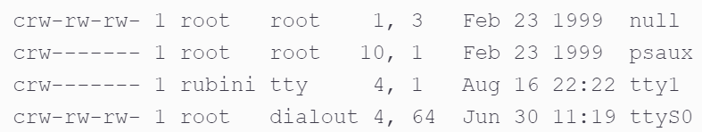

deep guide
devices are located in the /devfolder, when lookin at a device with ls -l, we see "c" char to represent char device
as such, there are 2 numbers, the first - major, and the second - minor:

- major number- identifies the driver associated with the device.
- The kernel uses the major number at open time to dispatch execution to the appropriate driver.
- minor number - used only by the driver specified by the major number;
- other parts of the kernel don’t use it.
- It is common for a driver to control several devices.
- the minor number provides a way for the driver to differentiate among them.